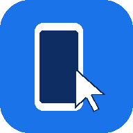

Pixel Control
See and control your phone from this computer, over USB.
- Plug your Pixel into this computer with a USB cable.
- Click Connect phone, pick your Pixel in the list, then click Connect.
- On the phone, tap Allow on “Allow USB debugging?” — tick Always allow from this computer so you only see it once.
After the first time, it connects by itself whenever you open the app with the phone plugged in. First time? USB debugging must be on — .
Install Pixel Control on this computer
Gets its own window and a Start menu icon.